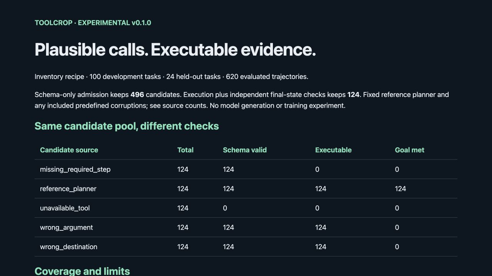
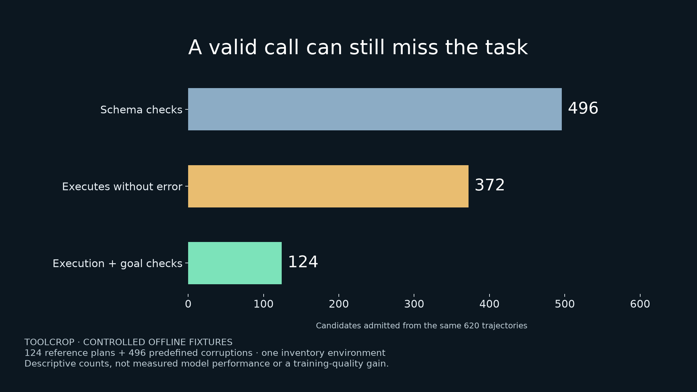

ToolCrop campaign review
Prepared English copy. Prepared, reserved, scheduled and published states are tracked separately in scheduling-status.json. These pages do not schedule posts.
01-problem
Dataset authors and developers building tool-use benchmarks
AI-generated conceptual illustration
Alt text: Conceptual ToolCrop illustration: instruction cards pass through a transparent mechanical test rig. Mint building blocks continue and amber cards are diverted. Text: ToolCrop. Plausible is only the start. This is artwork, not measured software output.
LinkedIn
The JSON is valid. The tool runs. The training example is still wrong.
Here is a small, reproducible failure: a task asks to ship one item. The proposed sequence reserves two and ships one. Both tool calls execute. One item remains reserved, so the task's declared final state is wrong.
A dataset pipeline that checks only function names and argument types can keep that example. A pipeline that checks only for execution errors can keep it, too.
I built ToolCrop as an attributed fork of Bespoke Labs Curator to make that gap inspectable. Its first recipe runs multi-step inventory trajectories in memory, compares their results with independently specified goals, and exports accepted and rejected rows with reasons.
This example is a deliberately constructed fixture, not a claim about how often a model makes the mistake. The useful engineering question is narrower: can the dataset check distinguish an executable sequence from a completed task?
Try development-000:wrong_argument in the checked-in rejection records. Read the residual reservation and the final-state mismatch. Then ask what equivalent failure could enter your own dataset.
Code and offline quickstart: https://github.com/grishahq/toolcrop
Curator already supplied generation, structured outputs and caching; ToolCrop adds this execution-validation recipe. Concept image is AI-generated artwork, not a product screenshot.
X thread
1/4 Valid JSON. Real tool execution. Still a bad training example. A fixture asks to ship one item; the sequence reserves two and ships one. Every call runs, but one item stays reserved.
2/4 Checking the function schema misses that. Checking only for runtime errors misses it, too. The independently specified final inventory catches it. This is a controlled counterexample, not a measured model failure rate.
3/4 ToolCrop adds an inventory dataset recipe to Bespoke Labs Curator: execute proposed calls, check trusted goals, retain reasons, export accepted/rejected rows. The image is conceptual AI artwork, not a screenshot.
4/4 Reproduce without an API key: run toolcrop demo and inspect development-000:wrong_argument in rejected.jsonl. What equivalent residual state could your dataset miss? Code: https://github.com/grishahq/toolcrop
Evidence: https://github.com/grishahq/toolcrop/blob/v0.1.0/evidence/inventory-v1/rejected.jsonl; development-000:wrong_argument; src/toolcrop/contracts.py; recipe_tests/test_recipe.py
02-tradeoff
Agent benchmark engineers and small-model dataset teams
AI-generated conceptual illustration
Alt text: Conceptual ToolCrop artwork shows a parcel at a forked mechanical route. A mint route reaches the intended dock; an amber route reaches a dock marked with a cross. Text: ToolCrop. Check the destination, too. No empirical result is depicted.
LinkedIn
A successful API response is only one part of a tool-use label.
The straightforward filter is attractive: validate the schema, execute the calls, keep anything that returns successfully. It is fast to understand, but it cannot tell whether stock reached the requested destination or an unrelated dock.
ToolCrop makes a deliberate tradeoff: start with one small environment whose success conditions can be specified independently. The generator sees the request, starting state and tool schemas. The evaluator owns the trusted goal. A generated answer cannot rewrite its own pass condition.
Review exposed a more subtle case. 'Hold three items, then release them' ends at the initial state. A final-state-only validator could accept holding the wrong item. The fix was a separately specified intermediate checkpoint, plus regression cases for wrong items and matched wrong quantities.
That extra specification costs effort. It also makes the guarantee narrower and easier to inspect: the trajectory must execute and satisfy declared state/checkpoint predicates. The recipe does not prove every possible policy constraint or optimal plan.
Curator supplies the generation infrastructure; ToolCrop adds this contained validation workflow. Arbitrary external tools remain outside the environment.
Oracle, methodology and limits: https://github.com/grishahq/toolcrop/blob/v0.1.0/toolcrop_docs/DATA_CARD.md
If you can produce a false accept, open a minimal fixture. That is more useful than a larger synthetic row count. Illustration is conceptual AI artwork.
X thread
1/4 A successful tool response does not prove the task succeeded. Shipping to the wrong dock can execute perfectly. Dataset labels need a goal that exists independently of the proposed trajectory.
2/4 ToolCrop's tradeoff: one small in-memory inventory environment, trusted declarative goals, bounded calls. Curator handles generation; the evaluator owns execution and judgment. A candidate cannot replace its own oracle.
3/4 Review caught a trap: hold-then-release ends at the starting state. Work on the wrong item could pass a final-state-only check. We added independent intermediate checkpoints and regression fixtures for all 41 hold/release tasks.
4/4 This checks declared conditions, not arbitrary tool safety or optimal planning. Review the oracle; send a minimal false accept. Methodology: https://github.com/grishahq/toolcrop/blob/v0.1.0/toolcrop_docs/DATA_CARD.md Concept image: AI-generated artwork.
Evidence: https://github.com/grishahq/toolcrop/blob/v0.1.0/toolcrop_docs/DATA_CARD.md; src/toolcrop/validators.py; recipe_tests/test_recipe.py::test_hold_release_requires_requested_intermediate_state
03-demo
Developers who need a runnable tool-use dataset recipe

Genuine screenshot of the generated HTML report
Alt text: Actual ToolCrop HTML report for 620 controlled offline trajectories. Table shows 124 references accepted; 124 examples in each of four corruption classes rejected. Wrong argument and wrong destination rows execute successfully but have zero goal matches. No model experiment is measured.
LinkedIn
A tool-use dataset demo you can reproduce without a model key.
ToolCrop's first recipe produces 100 accepted development trajectories and a separate 24-task held-out export. The reference planner and negative examples are deterministic, so you can inspect the whole pipeline before spending on model generation.
Run 'toolcrop demo --output reproduced', then open reproduced/report.html. The attached screenshot is the actual generated report. Expand a rejected record to see its proposed calls, executed tool results, final inventory and rejection reasons.
The output includes candidates.jsonl, accepted.jsonl, rejected.jsonl, separate development/held-out chat records and checksums. Initial state and tool schemas travel with the accepted chat records; converting them for a training provider is a separate step.
To test your own proposals, supply JSONL rows with exactly task_id and calls. The selected trusted task registry supplies the goal. Invalid tool calls become reasoned rejections instead of disappearing from the audit trail.
The optional adapter uses Curator's structured generation. This release's evidence uses offline reference fixtures and stubbed provider IO, not live model results. The adapter plans whole sequences; reactive tool-feedback rollout is future work.
Quickstart and examples: https://github.com/grishahq/toolcrop
Run it, inspect one rejection, and tell me which missing check would matter in your environment.
X thread
1/4 A runnable tool-use dataset recipe, no model key needed: ToolCrop's offline demo emits 100 accepted development trajectories plus a separate 24-task held-out export. Screenshot: the real HTML report.
2/4 Run: toolcrop demo --output reproduced. Open reproduced/report.html. Inspect a rejection: proposed calls, actual simulator results, final inventory, and why the goal failed.
3/4 Exported: accepted/rejected JSONL, separate split chat records, tool schemas, initial-state metadata, coverage and checksums. These are reference fixtures. The optional Curator generation adapter is not a measured live-model experiment.
4/4 Next, feed your own task_id + calls JSONL through toolcrop validate. The registry owns the oracle. Try it and report one missing check: https://github.com/grishahq/toolcrop
Evidence: https://github.com/grishahq/toolcrop/blob/v0.1.0/evidence/inventory-v1/report.json; https://github.com/grishahq/toolcrop/blob/v0.1.0/evidence/inventory-v1/report.html; evidence/clean-install.txt; campaign/assets/real-report-screenshot.jpg
04-experiment
Dataset researchers and engineers evaluating validation pipelines

Matplotlib chart calculated from actual exported counts
Alt text: Chart of the same 620 controlled ToolCrop fixtures: schema validation admits 496, error-free execution admits 372, and execution plus independent goal/checkpoint checks admits 124. Pool: 124 reference plans and 496 predefined corruptions in one toy inventory environment. These are not measured model performance results.
LinkedIn
Same 620 trajectories. Three different admission decisions.
I evaluated ToolCrop's first inventory recipe with a fixed pool: 124 reference plans and four predefined corruptions per task. Each method receives the same proposed calls and initial state. No extra model budget, retries or regenerated candidates.
Schema checks admit 496 trajectories. Requiring error-free execution admits 372. Adding independent final-state and required checkpoint checks admits 124: all references and none of the injected corruptions.
That means the schema-only baseline admits 372 corrupted rows in this pool; execution-only admission still admits 248. The plotted chart comes directly from the exported JSON report.
The denominator matters. Development acceptance is 100/500 and held-out acceptance is 24/120 because the pool intentionally contains four negatives for each reference. A 20% acceptance rate here is a fixture design choice, not a model-quality statistic.
Coverage is 100/100 development tasks and 24/24 held-out tasks with at least one accepted reference. Both sets use the same three task families; held-out item IDs and tool schemas differ. The reference planner explicitly supports both. These are descriptive toy-environment checks, not independent statistical trials, learned generalization, or a training-quality gain.
Methodology, exact corruption definitions and reproduction: https://github.com/grishahq/toolcrop/blob/v0.1.0/toolcrop_docs/DATA_CARD.md
Try a different corruption. Finding the next false accept would make this recipe more useful than treating perfect rejection on a designed pool as proof of correctness.
X thread
1/4 Same 620 tool-use trajectories: schema checks admit 496; error-free execution admits 372; independent goal/checkpoint checks admit 124. Chart calculated from actual exported fixture counts.
2/4 Pool: 124 reference plans + 496 predefined corruptions. Wrong argument, missing step, unavailable tool, wrong destination/release. Every filter gets identical candidates and initial state. Zero injected corruptions pass the goal checks.
3/4 Limits matter: one toy environment, templated tasks, no model API calls or training. The held-out schema is explicitly supported by the reference planner. These counts do not show learned generalization or model-quality gains.
4/4 Acceptance is 20% on each intentionally corrupted split; coverage is 100/100 development and 24/24 held-out tasks. Reproduce the method, then propose a missed corruption: https://github.com/grishahq/toolcrop/blob/v0.1.0/toolcrop_docs/DATA_CARD.md
Evidence: https://github.com/grishahq/toolcrop/blob/v0.1.0/toolcrop_docs/DATA_CARD.md; https://github.com/grishahq/toolcrop/blob/v0.1.0/evidence/inventory-v1/report.json; scripts/plot_evidence.py; campaign/assets/filter-comparison.png
05-release
Open-source users, dataset teams and engineering reviewers
Genuine screenshot of the release's executable demo
Alt text: Actual ToolCrop report shipped with the experimental v0.1.0 recipe. It separates schema validity, error-free execution and independently checked goal success for reference and corrupted tool-use trajectories. The report clearly labels the pool as offline fixtures with no model training experiment.
LinkedIn
ToolCrop v0.1.0 is released as an experimental Curator fork.
The scope is deliberately concrete: one contained inventory environment, independent goals and required checkpoints, a complete acceptance/rejection trail, dataset exports and coverage reports. Curator's original synthetic-data and bulk-inference functionality remains in the fork, with its history, Apache-2.0 license and attribution preserved.
The release includes a wheel, source package, fixture bundle and checksums. Clean installation preserves Curator imports and reproduces the demo output digests. 197 recipe/selected upstream checks pass. Independent correctness review found issues in the first implementation; the fixes and recheck are documented rather than hidden.
Quickstart on Python 3.11:
1. Clone https://github.com/grishahq/toolcrop
2. Check out v0.1.0 and install with 'python -m pip install .'
3. Run 'toolcrop demo --output reproduced'
4. Open reproduced/report.html and inspect accepted.jsonl alongside rejected.jsonl.
No model key is required for that demo. Live provider inference and full upstream GPU/provider suites are outside the measured release evidence. The fixtures do not establish a model-quality gain or a production-safety guarantee.
Next: expand negative cases and coverage, add reactive model rollout, then a second environment based on external usage.
Release and downloadable assets: https://github.com/grishahq/toolcrop/releases/tag/v0.1.0
If you build tool-use datasets, try one task and open a focused issue with the candidate sequence and the independently expected outcome. The screenshot is real software output.
X thread
1/4 ToolCrop v0.1.0 is released: an experimental, attributed Curator fork for execution-validated tool-use datasets. Wheel, source, fixture data and checksums: https://github.com/grishahq/toolcrop/releases/tag/v0.1.0
2/4 Quickstart: clone grishahq/toolcrop, check out v0.1.0, install with python -m pip install ., then run toolcrop demo --output reproduced. Open reproduced/report.html. No model key needed for the deterministic demo.
3/4 197 recipe/selected upstream checks pass. Clean artifact install reproduces export digests; independent review findings and fixes are recorded. Full provider/GPU suites and live model inference are not measured here.
4/4 Curator's library/history/license stay intact. ToolCrop adds the contained inventory recipe, independent oracle, rejection trail and exports. Try a task and send a minimal false accept/reject: https://github.com/grishahq/toolcrop No model-quality gain is claimed.
Evidence: https://github.com/grishahq/toolcrop/releases/tag/v0.1.0; evidence/published-release.json; evidence/published-artifact-check.json; evidence/validation-tests.txt; evidence/review.md